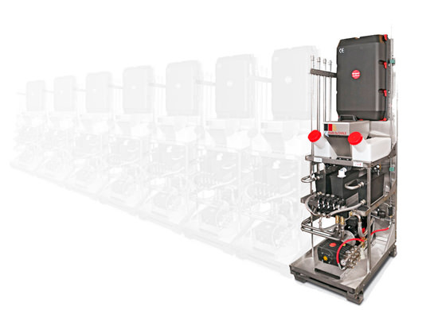

Технические блоки ModulLine устанавливаются в техническом контейнере, благодаря чему оборудование более защищено от возможного вандализма и неблагоприятного воздействия окружающей среды. Одновременно значительно облегчены доступ к технике, контроль за работой оборудования, его регулировка, сервис и уход за ним, а также процесс подачи химических средств.
Компактность и унификация элементов системы, как например модуль обогрева LCE, теплообменник, генератор пены и вариации панелей управления, позволяют подобрать конфигурацию автомойки согласно требованиям клиента.
Все модули системы и подключения унифицированы, в связи с чем ремонт, расширение и проектирование автомойки для конкретного заказа значительно облегчены.
Инвестор может сам решить, какие из элементов системы EHRLE должны быть установлены. Кроме того, систему EHRLE ModulLine можно легко расширить на очередные посты мойки.
Система управления основана на промышленных компьютерах фирмы Siemens, работающих в сети LAN, распознает количество объединенных постов и соответственно управляет работой автомойки. Соединение основано на стандарте последовательной трансмиссии RS485, пересылающей данные между постами автомойки и отдельными модулями ModulLine.
Система CM1 (Condition Monitoring 1) в главным компьютере автомойки, обеспечивает доступ к существенным данным, таким как оборот автомойки, в том числе за день, неделю, месяц, год и за весь период. Все данные доступны через сенсорный TFT-дисплей.
В целях обеспечения максимальной сохранности денежных средств, автомойку можно оборудовать системой вакуумного транспорта монет, которая отсасывает деньги в специальный сейф, расположенный внутри контейнера.
